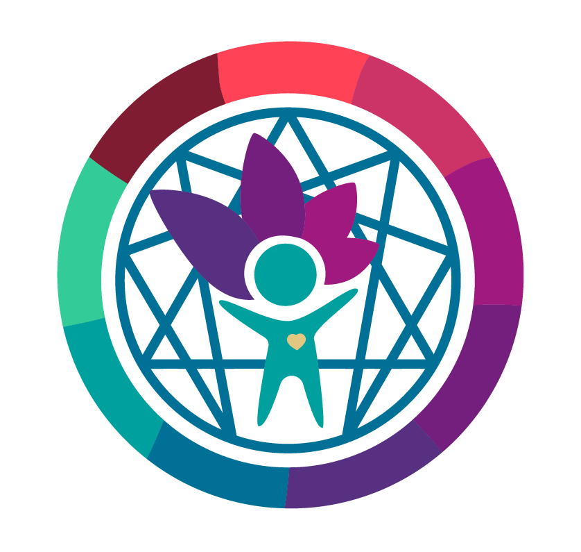

Entiende los patrones que operan en ti — y en quienes amas — sin que nadie lo haya elegido.
No es mala suerte ni carácter difícil. Es un mecanismo que aprendiste para sobrevivir.
El Eneagrama muestra cómo opera tu personalidad bajo presión, especialmente en las relaciones.
Cuando lo ves, ya no eres el patrón. Puedes elegir conscientemente cómo actuar.
Es un mapa de cómo tu personalidad aprendió a sobrevivir. Cada eneatipo tiene un miedo raíz que en la infancia fue útil, pero en la adultez se vuelve automático — sobre todo en las relaciones.
Explora cómo cada patrón se manifiesta en las relaciones. Haz clic en cualquier tarjeta.
Haz clic en los que te identificaste para agregarlos:
Si te reconociste en alguno de estos patrones, eso no es coincidencia. Es el mapa mostrándote dónde está el trabajo real.